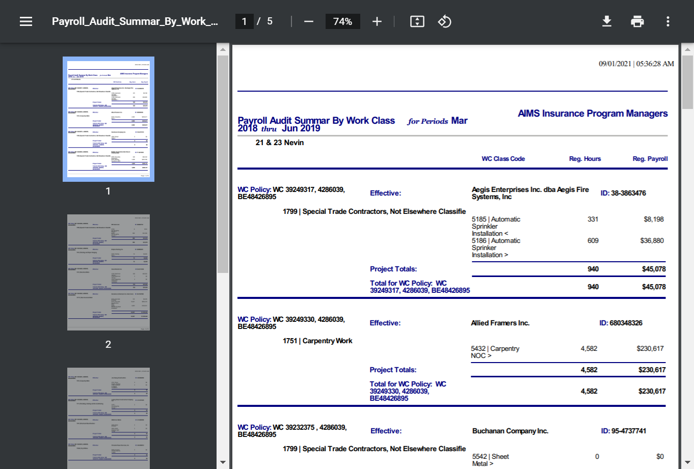

Total Tests
Total Steps
Total Time Taken (Current Run)
1h 25m 32s+327ms
Total Time Taken (Overall)
1h 25m 32s+327ms
Start
2021-09-01 15:53:05
End
2021-09-01 17:18:38
Pass Percentage
Environment
| Param | Value |
|---|---|
| OS | Windows 10 |
| User Name | NDave |
| Java Version | 15.0.2 |
| Host Name | Nourtek-100 |
Categories
| Name |
|---|
| Functional Test |
Tests
-
Report_ExpiringCertificateReportOld_Test :: testExpiringCertificateReportOld fail2021-09-01 15:53:17 2021-09-01 15:56:41 0h 3m 23s+402mstestExpiringCertificateReportOldFunctional Test
Status Timestamp Details 15:53:17 Test Started 15:53:17 Browser Name chrome 15:54:08 https://beta.wrapportal.com/login.aspx?ReturnUrl=%2f Current Url 15:54:08 nouraims User Name Entered Successfully 15:54:08 .5(c*Jkppj Password Entered Successfully 15:54:10 Clicked On Login Button 15:54:10 Login Successfully 15:54:33 Clicked on Report Module Icon 15:54:35 Respective Program Select Form Dropdown 15:54:40 Expiring Certificate Report Report is Selected 15:54:59 Project Selected Successfully 15:55:02 Contractor Selected Successfully 15:55:07 Clicked On Build Report Button 15:55:10 Report Generated 15:55:40 org.openqa.selenium.NoSuchElementException: no such element: Unable to locate element: {"method":"xpath","selector":"//body//tr[3]/td[1]"} (Session info: chrome=93.0.4577.63) For documentation on this error, please visit: https://selenium.dev/exceptions/#no_such_element Build info: version: '4.0.0-alpha-4', revision: 'c2d955b49e' System info: host: 'NOURTEK-100', ip: '192.168.29.211', os.name: 'Windows 10', os.arch: 'amd64', os.version: '10.0', java.version: '15.0.2' Driver info: org.openqa.selenium.chrome.ChromeDriver Capabilities {acceptInsecureCerts: false, browserName: chrome, browserVersion: 93.0.4577.63, chrome: {chromedriverVersion: 92.0.4515.107 (87a818b10553..., userDataDir: C:\Users\NDave\AppData\Loca...}, goog:chromeOptions: {debuggerAddress: localhost:58839}, javascriptEnabled: true, networkConnectionEnabled: false, pageLoadStrategy: normal, platform: WINDOWS, platformName: WINDOWS, proxy: Proxy(), setWindowRect: true, strictFileInteractability: false, timeouts: {implicit: 0, pageLoad: 300000, script: 30000}, unhandledPromptBehavior: dismiss and notify, webauthn:extension:credBlob: true, webauthn:extension:largeBlob: true, webauthn:virtualAuthenticators: true} Session ID: db82c84d3272beecb8622c5684446f27 *** Element info: {Using=xpath, value=//body//tr[3]/td[1]}Report Header Name Not Matched 15:55:40 Something Went Wrong 
15:56:40 testExpiringCertificateReportOld Test has been Failed2 15:56:40 org.openqa.selenium.NoSuchElementException: no such element: Unable to locate element: {"method":"xpath","selector":"//a[@id='HlinkExportExcel']"} (Session info: chrome=93.0.4577.63) For documentation on this error, please visit: https://selenium.dev/exceptions/#no_such_element Build info: version: '4.0.0-alpha-4', revision: 'c2d955b49e' System info: host: 'NOURTEK-100', ip: '192.168.29.211', os.name: 'Windows 10', os.arch: 'amd64', os.version: '10.0', java.version: '15.0.2' Driver info: org.openqa.selenium.chrome.ChromeDriver Capabilities {acceptInsecureCerts: false, browserName: chrome, browserVersion: 93.0.4577.63, chrome: {chromedriverVersion: 92.0.4515.107 (87a818b10553..., userDataDir: C:\Users\NDave\AppData\Loca...}, goog:chromeOptions: {debuggerAddress: localhost:58839}, javascriptEnabled: true, networkConnectionEnabled: false, pageLoadStrategy: normal, platform: WINDOWS, platformName: WINDOWS, proxy: Proxy(), setWindowRect: true, strictFileInteractability: false, timeouts: {implicit: 0, pageLoad: 300000, script: 30000}, unhandledPromptBehavior: dismiss and notify, webauthn:extension:credBlob: true, webauthn:extension:largeBlob: true, webauthn:virtualAuthenticators: true} Session ID: db82c84d3272beecb8622c5684446f27 *** Element info: {Using=xpath, value=//a[@id='HlinkExportExcel']} at java.base/jdk.internal.reflect.NativeConstructorAccessorImpl.newInstance0(Native Method) at java.base/jdk.internal.reflect.NativeConstructorAccessorImpl.newInstance(NativeConstructorAccessorImpl.java:64) at java.base/jdk.internal.reflect.DelegatingConstructorAccessorImpl.newInstance(DelegatingConstructorAccessorImpl.java:45) at java.base/java.lang.reflect.Constructor.newInstanceWithCaller(Constructor.java:500) at java.base/java.lang.reflect.Constructor.newInstance(Constructor.java:481) at org.openqa.selenium.remote.codec.w3c.W3CHttpResponseCodec.createException(W3CHttpResponseCodec.java:196) at org.openqa.selenium.remote.codec.w3c.W3CHttpResponseCodec.decode(W3CHttpResponseCodec.java:129) at org.openqa.selenium.remote.codec.w3c.W3CHttpResponseCodec.decode(W3CHttpResponseCodec.java:53) at org.openqa.selenium.remote.HttpCommandExecutor.execute(HttpCommandExecutor.java:161) at org.openqa.selenium.remote.service.DriverCommandExecutor.execute(DriverCommandExecutor.java:83) at org.openqa.selenium.remote.RemoteWebDriver.execute(RemoteWebDriver.java:582) at org.openqa.selenium.remote.RemoteWebDriver.findElement(RemoteWebDriver.java:333) at org.openqa.selenium.remote.RemoteWebDriver.findElementByXPath(RemoteWebDriver.java:451) at org.openqa.selenium.By$ByXPath.findElement(By.java:394) at org.openqa.selenium.remote.RemoteWebDriver.findElement(RemoteWebDriver.java:325) at ObjectRepository.Report_EnrollmentListReportOld.linkExportToExcel(Report_EnrollmentListReportOld.java:80) at TestScript.Report_ExpiringCertificateReportOld_Test.testExpiringCertificateReportOld(Report_ExpiringCertificateReportOld_Test.java:95) at java.base/jdk.internal.reflect.NativeMethodAccessorImpl.invoke0(Native Method) at java.base/jdk.internal.reflect.NativeMethodAccessorImpl.invoke(NativeMethodAccessorImpl.java:64) at java.base/jdk.internal.reflect.DelegatingMethodAccessorImpl.invoke(DelegatingMethodAccessorImpl.java:43) at java.base/java.lang.reflect.Method.invoke(Method.java:564) at org.testng.internal.MethodInvocationHelper.invokeMethod(MethodInvocationHelper.java:133) at org.testng.internal.TestInvoker.invokeMethod(TestInvoker.java:598) at org.testng.internal.TestInvoker.invokeTestMethod(TestInvoker.java:173) at org.testng.internal.MethodRunner.runInSequence(MethodRunner.java:46) at org.testng.internal.TestInvoker$MethodInvocationAgent.invoke(TestInvoker.java:824) at org.testng.internal.TestInvoker.invokeTestMethods(TestInvoker.java:146) at org.testng.internal.TestMethodWorker.invokeTestMethods(TestMethodWorker.java:146) at org.testng.internal.TestMethodWorker.run(TestMethodWorker.java:128) at java.base/java.util.ArrayList.forEach(ArrayList.java:1511) at org.testng.TestRunner.privateRun(TestRunner.java:794) at org.testng.TestRunner.run(TestRunner.java:596) at org.testng.SuiteRunner.runTest(SuiteRunner.java:377) at org.testng.SuiteRunner.runSequentially(SuiteRunner.java:371) at org.testng.SuiteRunner.privateRun(SuiteRunner.java:332) at org.testng.SuiteRunner.run(SuiteRunner.java:276) at org.testng.SuiteRunnerWorker.runSuite(SuiteRunnerWorker.java:53) at org.testng.SuiteRunnerWorker.run(SuiteRunnerWorker.java:96) at org.testng.TestNG.runSuitesSequentially(TestNG.java:1212) at org.testng.TestNG.runSuitesLocally(TestNG.java:1134) at org.testng.TestNG.runSuites(TestNG.java:1063) at org.testng.TestNG.run(TestNG.java:1031) at org.testng.remote.AbstractRemoteTestNG.run(AbstractRemoteTestNG.java:115) at org.testng.remote.RemoteTestNG.initAndRun(RemoteTestNG.java:251) at org.testng.remote.RemoteTestNG.main(RemoteTestNG.java:77)15:56:41 
15:56:41 Test Ended -
Report_EnrollmentListReportOld_Test :: testEnrollmentListReportOld fail2021-09-01 15:57:24 2021-09-01 15:59:20 0h 1m 55s+367mstestEnrollmentListReportOldFunctional Test
Status Timestamp Details 15:57:24 Test Started 15:57:24 Browser Name chrome 15:58:02 https://beta.wrapportal.com/login.aspx?ReturnUrl=%2f Current Url 15:58:03 nouraims User Name Entered Successfully 15:58:03 .5(c*Jkppj Password Entered Successfully 15:58:04 Clicked On Login Button 15:58:04 Login Successfully 15:58:21 Clicked on Report Module Icon 15:58:23 Respective Program Select Form Dropdown 15:58:29 Enrollment List Report Report is Selected 15:58:41 Project Selected Successfully 15:58:44 Contractor Selected Successfully 15:58:48 Clicked On Build Report Button 15:58:51 Report Generated 15:58:51 Report Header Name Matched 15:58:51 Report Generated Successfully 15:58:53 Pdf Generated 
15:59:09 Excel file is not Downloaded Successfully 15:59:20 testEnrollmentListReportOld Test has been Passed1 15:59:20 Test Ended -
Report_EnrollmentDetailReportOld_Test :: testEnrollmentDetailReportOld fail2021-09-01 15:59:36 2021-09-01 16:01:32 0h 1m 56s+51mstestEnrollmentDetailReportOldFunctional Test
Status Timestamp Details 15:59:36 Test Started 15:59:36 Browser Name chrome 16:00:19 https://beta.wrapportal.com/login.aspx?ReturnUrl=%2f Current Url 16:00:19 nouraims User Name Entered Successfully 16:00:19 .5(c*Jkppj Password Entered Successfully 16:00:21 Clicked On Login Button 16:00:21 Login Successfully 16:00:37 Clicked on Report Module Icon 16:00:39 Respective Program Select Form Dropdown 16:00:46 Enrollment Detail Report Report is Selected 16:00:55 Project Selected Successfully 16:00:58 Contractor Selected Successfully 16:01:01 Clicked On Build Report Button 16:01:05 Report Generated 16:01:05 Report Header Name Matched 16:01:05 Report Header Name Matched 16:01:05 Report Generated Successfully 16:01:12 Pdf Generated 
16:01:27 Excel file is not Downloaded Successfully 16:01:32 testEnrollmentDetailReportOld Test has been Passed1 16:01:32 Test Ended -
Report_ReportedPayrollByContractorWorkClassOldTest :: testReportedPayrollByContractorOld fail2021-09-01 16:01:45 2021-09-01 16:04:17 0h 2m 31s+511mstestReportedPayrollByContractorOldFunctional Test
Status Timestamp Details 16:01:45 Test Started 16:01:45 Browser Name chrome 16:02:26 https://beta.wrapportal.com/login.aspx?ReturnUrl=%2f Current Url 16:02:26 nouraims User Name Entered Successfully 16:02:26 .5(c*Jkppj Password Entered Successfully 16:02:28 Clicked On Login Button 16:02:28 Login Successfully 16:02:40 Clicked on Report Module Icon 16:02:42 Respective Program Select Form Dropdown 16:02:47 Reported Payroll By Contractor Work Class Report is Selected 16:03:30 Project Selected Successfully 16:03:35 Contractor Selected Successfully 16:03:40 Clicked On Build Report Button 16:03:45 Report Generated 16:03:45 Report Header Name Matched 16:03:45 Report Generated Successfully 16:03:47 Pdf Generated 16:04:06 Excel file is not Downloaded Successfully 16:04:17 testReportedPayrollByContractorOld Test has been Passed1 16:04:17 Test Ended -
Report_PayrollAuditSummaryByWorkClassOld_Test :: testPayrollAuditSummaryOld fail2021-09-01 16:04:26 2021-09-01 16:06:59 0h 2m 32s+690mstestPayrollAuditSummaryOldFunctional Test
Status Timestamp Details 16:04:26 Test Started 16:04:26 Browser Name chrome 16:05:17 https://beta.wrapportal.com/login.aspx?ReturnUrl=%2f Current Url 16:05:17 nouraims User Name Entered Successfully 16:05:17 .5(c*Jkppj Password Entered Successfully 16:05:19 Clicked On Login Button 16:05:19 Login Successfully 16:05:44 Clicked on Report Module Icon 16:05:46 Respective Program Select Form Dropdown 16:05:56 Payroll Audit Summar By Work Class Report is Selected 16:06:08 Project Selected Successfully 16:06:12 Contractor Selected Successfully 16:06:18 Clicked On Build Report Button 16:06:23 Report Generated 16:06:32 Pdf Generated  16:06:48 Excel file is not Downloaded Successfully 16:06:59 testPayrollAuditSummaryOld Test has been Passed1 16:06:59 Test Ended -
Report_Certificate_Log_Old_Test :: testProjectSummaryReportOld fail2021-09-01 16:07:39 2021-09-01 16:09:52 0h 2m 12s+836mstestProjectSummaryReportOldFunctional Test
Status Timestamp Details 16:07:39 Test Started 16:07:39 Browser Name chrome 16:08:27 https://beta.wrapportal.com/login.aspx?ReturnUrl=%2f Current Url 16:08:27 nouraims User Name Entered Successfully 16:08:27 .5(c*Jkppj Password Entered Successfully 16:08:29 Clicked On Login Button 16:08:29 Login Successfully 16:08:53 Clicked on Report Module Icon 16:08:55 Respective Program Select Form Dropdown 16:09:00 Certificate Log Report is Selected 16:09:14 Project Selected Successfully 16:09:18 Clicked On Build Report Button 16:09:21 Report Generated 16:09:21 Report Header Name Matched 16:09:21 Report Generated Successfully 16:09:51 testProjectSummaryReportOld Test has been Failed2 16:09:51 org.openqa.selenium.NoSuchElementException: no such element: Unable to locate element: {"method":"xpath","selector":"//a[@id='HlinkExportPDF']"} (Session info: chrome=93.0.4577.63) For documentation on this error, please visit: https://selenium.dev/exceptions/#no_such_element Build info: version: '4.0.0-alpha-4', revision: 'c2d955b49e' System info: host: 'NOURTEK-100', ip: '192.168.29.211', os.name: 'Windows 10', os.arch: 'amd64', os.version: '10.0', java.version: '15.0.2' Driver info: org.openqa.selenium.chrome.ChromeDriver Capabilities {acceptInsecureCerts: false, browserName: chrome, browserVersion: 93.0.4577.63, chrome: {chromedriverVersion: 92.0.4515.107 (87a818b10553..., userDataDir: C:\Users\NDave\AppData\Loca...}, goog:chromeOptions: {debuggerAddress: localhost:51754}, javascriptEnabled: true, networkConnectionEnabled: false, pageLoadStrategy: normal, platform: WINDOWS, platformName: WINDOWS, proxy: Proxy(), setWindowRect: true, strictFileInteractability: false, timeouts: {implicit: 0, pageLoad: 300000, script: 30000}, unhandledPromptBehavior: dismiss and notify, webauthn:extension:credBlob: true, webauthn:extension:largeBlob: true, webauthn:virtualAuthenticators: true} Session ID: 560d4a77981c2acaa7c14cb931fd8d32 *** Element info: {Using=xpath, value=//a[@id='HlinkExportPDF']} at java.base/jdk.internal.reflect.NativeConstructorAccessorImpl.newInstance0(Native Method) at java.base/jdk.internal.reflect.NativeConstructorAccessorImpl.newInstance(NativeConstructorAccessorImpl.java:64) at java.base/jdk.internal.reflect.DelegatingConstructorAccessorImpl.newInstance(DelegatingConstructorAccessorImpl.java:45) at java.base/java.lang.reflect.Constructor.newInstanceWithCaller(Constructor.java:500) at java.base/java.lang.reflect.Constructor.newInstance(Constructor.java:481) at org.openqa.selenium.remote.codec.w3c.W3CHttpResponseCodec.createException(W3CHttpResponseCodec.java:196) at org.openqa.selenium.remote.codec.w3c.W3CHttpResponseCodec.decode(W3CHttpResponseCodec.java:129) at org.openqa.selenium.remote.codec.w3c.W3CHttpResponseCodec.decode(W3CHttpResponseCodec.java:53) at org.openqa.selenium.remote.HttpCommandExecutor.execute(HttpCommandExecutor.java:161) at org.openqa.selenium.remote.service.DriverCommandExecutor.execute(DriverCommandExecutor.java:83) at org.openqa.selenium.remote.RemoteWebDriver.execute(RemoteWebDriver.java:582) at org.openqa.selenium.remote.RemoteWebDriver.findElement(RemoteWebDriver.java:333) at org.openqa.selenium.remote.RemoteWebDriver.findElementByXPath(RemoteWebDriver.java:451) at org.openqa.selenium.By$ByXPath.findElement(By.java:394) at org.openqa.selenium.remote.RemoteWebDriver.findElement(RemoteWebDriver.java:325) at ObjectRepository.Report_EnrollmentListReportOld.linkExportToPDF(Report_EnrollmentListReportOld.java:90) at TestScript.Report_Certificate_Log_Old_Test.testProjectSummaryReportOld(Report_Certificate_Log_Old_Test.java:70) at java.base/jdk.internal.reflect.NativeMethodAccessorImpl.invoke0(Native Method) at java.base/jdk.internal.reflect.NativeMethodAccessorImpl.invoke(NativeMethodAccessorImpl.java:64) at java.base/jdk.internal.reflect.DelegatingMethodAccessorImpl.invoke(DelegatingMethodAccessorImpl.java:43) at java.base/java.lang.reflect.Method.invoke(Method.java:564) at org.testng.internal.MethodInvocationHelper.invokeMethod(MethodInvocationHelper.java:133) at org.testng.internal.TestInvoker.invokeMethod(TestInvoker.java:598) at org.testng.internal.TestInvoker.invokeTestMethod(TestInvoker.java:173) at org.testng.internal.MethodRunner.runInSequence(MethodRunner.java:46) at org.testng.internal.TestInvoker$MethodInvocationAgent.invoke(TestInvoker.java:824) at org.testng.internal.TestInvoker.invokeTestMethods(TestInvoker.java:146) at org.testng.internal.TestMethodWorker.invokeTestMethods(TestMethodWorker.java:146) at org.testng.internal.TestMethodWorker.run(TestMethodWorker.java:128) at java.base/java.util.ArrayList.forEach(ArrayList.java:1511) at org.testng.TestRunner.privateRun(TestRunner.java:794) at org.testng.TestRunner.run(TestRunner.java:596) at org.testng.SuiteRunner.runTest(SuiteRunner.java:377) at org.testng.SuiteRunner.runSequentially(SuiteRunner.java:371) at org.testng.SuiteRunner.privateRun(SuiteRunner.java:332) at org.testng.SuiteRunner.run(SuiteRunner.java:276) at org.testng.SuiteRunnerWorker.runSuite(SuiteRunnerWorker.java:53) at org.testng.SuiteRunnerWorker.run(SuiteRunnerWorker.java:96) at org.testng.TestNG.runSuitesSequentially(TestNG.java:1212) at org.testng.TestNG.runSuitesLocally(TestNG.java:1134) at org.testng.TestNG.runSuites(TestNG.java:1063) at org.testng.TestNG.run(TestNG.java:1031) at org.testng.remote.AbstractRemoteTestNG.run(AbstractRemoteTestNG.java:115) at org.testng.remote.RemoteTestNG.initAndRun(RemoteTestNG.java:251) at org.testng.remote.RemoteTestNG.main(RemoteTestNG.java:77)16:09:52 
16:09:52 Test Ended -
Report_QuarterlyEnrollmenteportOld_Test :: testQuarterlyEnrollmenteportOld fail2021-09-01 16:10:30 2021-09-01 16:12:43 0h 2m 12s+925mstestQuarterlyEnrollmenteportOldFunctional Test
Status Timestamp Details 16:10:30 Test Started 16:10:30 Browser Name chrome 16:11:27 https://beta.wrapportal.com/login.aspx?ReturnUrl=%2f Current Url 16:11:27 nouraims User Name Entered Successfully 16:11:27 .5(c*Jkppj Password Entered Successfully 16:11:29 Clicked On Login Button 16:11:29 Login Successfully 16:11:45 Clicked on Report Module Icon 16:11:54 Respective Program Select Form Dropdown 16:11:59 Quarterly Enrollment Report Report is Selected 16:12:11 Project Selected Successfully 16:12:14 Contractor Selected Successfully 16:12:17 Clicked On Build Report Button 16:12:21 Report Generated 16:12:21 Report Header Name Matched 16:12:21 Report Generated Successfully 16:12:32 Excel file is not Downloaded Successfully 16:12:43 testQuarterlyEnrollmenteportOld Test has been Passed1 16:12:43 Test Ended -
Report_ProjectFinancialAnalysisOld_Test :: testProjectFinancialAnalysisReport fail2021-09-01 16:12:54 2021-09-01 16:15:59 0h 3m 4s+589mstestProjectFinancialAnalysisReportFunctional Test
Status Timestamp Details 16:12:54 Test Started 16:12:54 Browser Name chrome 16:13:51 https://beta.wrapportal.com/login.aspx?ReturnUrl=%2f Current Url 16:13:51 nouraims User Name Entered Successfully 16:13:51 .5(c*Jkppj Password Entered Successfully 16:13:53 Clicked On Login Button 16:13:53 Login Successfully 16:14:20 Clicked on Report Module Icon 16:14:22 Respective Program Select Form Dropdown 16:15:27 org.openqa.selenium.NoSuchElementException: no such element: Unable to locate element: {"method":"xpath","selector":"//span[text()='Project Financial Analysis ']"} (Session info: chrome=93.0.4577.63) For documentation on this error, please visit: https://selenium.dev/exceptions/#no_such_element Build info: version: '4.0.0-alpha-4', revision: 'c2d955b49e' System info: host: 'NOURTEK-100', ip: '192.168.29.211', os.name: 'Windows 10', os.arch: 'amd64', os.version: '10.0', java.version: '15.0.2' Driver info: org.openqa.selenium.chrome.ChromeDriver Capabilities {acceptInsecureCerts: false, browserName: chrome, browserVersion: 93.0.4577.63, chrome: {chromedriverVersion: 92.0.4515.107 (87a818b10553..., userDataDir: C:\Users\NDave\AppData\Loca...}, goog:chromeOptions: {debuggerAddress: localhost:63172}, javascriptEnabled: true, networkConnectionEnabled: false, pageLoadStrategy: normal, platform: WINDOWS, platformName: WINDOWS, proxy: Proxy(), setWindowRect: true, strictFileInteractability: false, timeouts: {implicit: 0, pageLoad: 300000, script: 30000}, unhandledPromptBehavior: dismiss and notify, webauthn:extension:credBlob: true, webauthn:extension:largeBlob: true, webauthn:virtualAuthenticators: true} Session ID: 3fc60a0a4f1be7424731b6b18e0eade5 *** Element info: {Using=xpath, value=//span[text()='Project Financial Analysis ']} Something Went Wrong 16:15:28 Something Went Wrong 
16:15:28 org.openqa.selenium.NoSuchFrameException: no such frame (Session info: chrome=93.0.4577.63) Build info: version: '4.0.0-alpha-4', revision: 'c2d955b49e' System info: host: 'NOURTEK-100', ip: '192.168.29.211', os.name: 'Windows 10', os.arch: 'amd64', os.version: '10.0', java.version: '15.0.2' Driver info: org.openqa.selenium.chrome.ChromeDriver Capabilities {acceptInsecureCerts: false, browserName: chrome, browserVersion: 93.0.4577.63, chrome: {chromedriverVersion: 92.0.4515.107 (87a818b10553..., userDataDir: C:\Users\NDave\AppData\Loca...}, goog:chromeOptions: {debuggerAddress: localhost:63172}, javascriptEnabled: true, networkConnectionEnabled: false, pageLoadStrategy: normal, platform: WINDOWS, platformName: WINDOWS, proxy: Proxy(), setWindowRect: true, strictFileInteractability: false, timeouts: {implicit: 0, pageLoad: 300000, script: 30000}, unhandledPromptBehavior: dismiss and notify, webauthn:extension:credBlob: true, webauthn:extension:largeBlob: true, webauthn:virtualAuthenticators: true} Session ID: 3fc60a0a4f1be7424731b6b18e0eade5Report Header Name Not Matched 16:15:28 Something Went Wrong 
16:15:58 testProjectFinancialAnalysisReport Test has been Failed2 16:15:58 org.openqa.selenium.NoSuchFrameException: no such frame (Session info: chrome=93.0.4577.63) Build info: version: '4.0.0-alpha-4', revision: 'c2d955b49e' System info: host: 'NOURTEK-100', ip: '192.168.29.211', os.name: 'Windows 10', os.arch: 'amd64', os.version: '10.0', java.version: '15.0.2' Driver info: org.openqa.selenium.chrome.ChromeDriver Capabilities {acceptInsecureCerts: false, browserName: chrome, browserVersion: 93.0.4577.63, chrome: {chromedriverVersion: 92.0.4515.107 (87a818b10553..., userDataDir: C:\Users\NDave\AppData\Loca...}, goog:chromeOptions: {debuggerAddress: localhost:63172}, javascriptEnabled: true, networkConnectionEnabled: false, pageLoadStrategy: normal, platform: WINDOWS, platformName: WINDOWS, proxy: Proxy(), setWindowRect: true, strictFileInteractability: false, timeouts: {implicit: 0, pageLoad: 300000, script: 30000}, unhandledPromptBehavior: dismiss and notify, webauthn:extension:credBlob: true, webauthn:extension:largeBlob: true, webauthn:virtualAuthenticators: true} Session ID: 3fc60a0a4f1be7424731b6b18e0eade5 at java.base/jdk.internal.reflect.NativeConstructorAccessorImpl.newInstance0(Native Method) at java.base/jdk.internal.reflect.NativeConstructorAccessorImpl.newInstance(NativeConstructorAccessorImpl.java:64) at java.base/jdk.internal.reflect.DelegatingConstructorAccessorImpl.newInstance(DelegatingConstructorAccessorImpl.java:45) at java.base/java.lang.reflect.Constructor.newInstanceWithCaller(Constructor.java:500) at java.base/java.lang.reflect.Constructor.newInstance(Constructor.java:481) at org.openqa.selenium.remote.codec.w3c.W3CHttpResponseCodec.createException(W3CHttpResponseCodec.java:196) at org.openqa.selenium.remote.codec.w3c.W3CHttpResponseCodec.decode(W3CHttpResponseCodec.java:129) at org.openqa.selenium.remote.codec.w3c.W3CHttpResponseCodec.decode(W3CHttpResponseCodec.java:53) at org.openqa.selenium.remote.HttpCommandExecutor.execute(HttpCommandExecutor.java:161) at org.openqa.selenium.remote.service.DriverCommandExecutor.execute(DriverCommandExecutor.java:83) at org.openqa.selenium.remote.RemoteWebDriver.execute(RemoteWebDriver.java:582) at org.openqa.selenium.remote.RemoteWebDriver$RemoteTargetLocator.frame(RemoteWebDriver.java:945) at TestScript.Report_ProjectFinancialAnalysisOld_Test.testProjectFinancialAnalysisReport(Report_ProjectFinancialAnalysisOld_Test.java:104) at java.base/jdk.internal.reflect.NativeMethodAccessorImpl.invoke0(Native Method) at java.base/jdk.internal.reflect.NativeMethodAccessorImpl.invoke(NativeMethodAccessorImpl.java:64) at java.base/jdk.internal.reflect.DelegatingMethodAccessorImpl.invoke(DelegatingMethodAccessorImpl.java:43) at java.base/java.lang.reflect.Method.invoke(Method.java:564) at org.testng.internal.MethodInvocationHelper.invokeMethod(MethodInvocationHelper.java:133) at org.testng.internal.TestInvoker.invokeMethod(TestInvoker.java:598) at org.testng.internal.TestInvoker.invokeTestMethod(TestInvoker.java:173) at org.testng.internal.MethodRunner.runInSequence(MethodRunner.java:46) at org.testng.internal.TestInvoker$MethodInvocationAgent.invoke(TestInvoker.java:824) at org.testng.internal.TestInvoker.invokeTestMethods(TestInvoker.java:146) at org.testng.internal.TestMethodWorker.invokeTestMethods(TestMethodWorker.java:146) at org.testng.internal.TestMethodWorker.run(TestMethodWorker.java:128) at java.base/java.util.ArrayList.forEach(ArrayList.java:1511) at org.testng.TestRunner.privateRun(TestRunner.java:794) at org.testng.TestRunner.run(TestRunner.java:596) at org.testng.SuiteRunner.runTest(SuiteRunner.java:377) at org.testng.SuiteRunner.runSequentially(SuiteRunner.java:371) at org.testng.SuiteRunner.privateRun(SuiteRunner.java:332) at org.testng.SuiteRunner.run(SuiteRunner.java:276) at org.testng.SuiteRunnerWorker.runSuite(SuiteRunnerWorker.java:53) at org.testng.SuiteRunnerWorker.run(SuiteRunnerWorker.java:96) at org.testng.TestNG.runSuitesSequentially(TestNG.java:1212) at org.testng.TestNG.runSuitesLocally(TestNG.java:1134) at org.testng.TestNG.runSuites(TestNG.java:1063) at org.testng.TestNG.run(TestNG.java:1031) at org.testng.remote.AbstractRemoteTestNG.run(AbstractRemoteTestNG.java:115) at org.testng.remote.RemoteTestNG.initAndRun(RemoteTestNG.java:251) at org.testng.remote.RemoteTestNG.main(RemoteTestNG.java:77)16:15:59 16:15:59 Test Ended -
Report_ContractorPayrollManHoursAndLaborRateOld_Test :: testContractorPayrollManHoursAndLaborRateOld fail2021-09-01 16:16:11 2021-09-01 16:18:44 0h 2m 32s+810mstestContractorPayrollManHoursAndLaborRateOldFunctional Test
Status Timestamp Details 16:16:11 Test Started 16:16:11 Browser Name chrome 16:16:55 https://beta.wrapportal.com/login.aspx?ReturnUrl=%2f Current Url 16:16:56 nouraims User Name Entered Successfully 16:16:56 .5(c*Jkppj Password Entered Successfully 16:16:57 Clicked On Login Button 16:16:57 Login Successfully 16:17:10 Clicked on Report Module Icon 16:17:12 Respective Program Select Form Dropdown 16:17:19 Contractor Payroll, Man-Hours & Labor Rate Report is Selected 16:17:30 Project Selected Successfully 16:17:33 Contractor Selected Successfully 16:17:37 Clicked On Build Report Button 16:17:40 Report Generated 16:17:56 Report Header Name Matched 16:17:56 Report Generated Successfully 16:18:17 Pdf Generated 
16:18:33 Excel file is not Downloaded Successfully 16:18:44 testContractorPayrollManHoursAndLaborRateOld Test has been Passed1 16:18:44 Test Ended -
Report_SubcontractorStatusReportOld_Test :: testSubcontractorStatusReportOld fail2021-09-01 16:19:10 2021-09-01 16:21:58 0h 2m 48s+831mstestSubcontractorStatusReportOldFunctional Test
Status Timestamp Details 16:19:10 Test Started 16:19:10 Browser Name chrome 16:19:52 https://beta.wrapportal.com/login.aspx?ReturnUrl=%2f Current Url 16:19:52 nouraims User Name Entered Successfully 16:19:52 .5(c*Jkppj Password Entered Successfully 16:19:53 Clicked On Login Button 16:19:53 Login Successfully 16:20:27 Clicked on Report Module Icon 16:20:29 Respective Program Select Form Dropdown 16:20:35 Subcontractor Status Report is Selected 16:20:45 Project Selected Successfully 16:20:53 Clicked On Build Report Button 16:20:56 Report Generated 
16:21:14 Report Header Name Matched 16:21:14 Report Generated Successfully 16:21:32 Pdf Generated 
16:21:47 Excel file is not Downloaded Successfully 16:21:58 testSubcontractorStatusReportOld Test has been Passed1 16:21:58 Test Ended -
Report_ContractorReportOld_Test :: testContractorReportOld fail2021-09-01 16:22:09 2021-09-01 16:24:43 0h 2m 33s+730mstestContractorReportOldFunctional Test
Status Timestamp Details 16:22:09 Test Started 16:22:09 Browser Name chrome 16:22:49 https://beta.wrapportal.com/login.aspx?ReturnUrl=%2f Current Url 16:22:49 nouraims User Name Entered Successfully 16:22:49 .5(c*Jkppj Password Entered Successfully 16:22:51 Clicked On Login Button 16:22:51 Login Successfully 16:23:11 Clicked on Report Module Icon 16:23:13 Respective Program Select Form Dropdown 16:23:19 Contractor Report Report is Selected 16:23:36 Project Selected Successfully 16:23:40 Clicked On Build Report Button 16:23:45 Report Generated 16:23:58 Report Header Name Matched 16:23:58 Report Generated Successfully 16:24:16 Pdf Generated 
16:24:32 Excel file is not Downloaded Successfully 16:24:43 testContractorReportOld Test has been Passed1 16:24:43 Test Ended -
Report_StatusReportOld_Test :: testStatusReportOld fail2021-09-01 16:24:52 2021-09-01 16:26:57 0h 2m 5s+286mstestStatusReportOldFunctional Test
Status Timestamp Details 16:24:52 Test Started 16:24:52 Browser Name chrome 16:25:39 https://beta.wrapportal.com/login.aspx?ReturnUrl=%2f Current Url 16:25:39 nouraims User Name Entered Successfully 16:25:39 .5(c*Jkppj Password Entered Successfully 16:25:41 Clicked On Login Button 16:25:41 Login Successfully 16:25:55 Clicked on Report Module Icon 16:25:57 Respective Program Select Form Dropdown 16:26:03 Status Report Report is Selected 16:26:12 Project Selected Successfully 16:26:15 Contractor Selected Successfully 16:26:20 Clicked On Build Report Button 16:26:23 Report Generated 16:26:23 Report Header Name Matched 16:26:23 Report Generated Successfully 16:26:31 Pdf Generated 16:26:46 Excel file is not Downloaded Successfully 16:26:57 testStatusReportOld Test has been Passed1 16:26:57 Test Ended -
Report_CertificateTrackingReportOld_Test :: testCertificateTrackingReportOld fail2021-09-01 16:27:11 2021-09-01 16:29:48 0h 2m 37s+15mstestCertificateTrackingReportOldFunctional Test
Status Timestamp Details 16:27:11 Test Started 16:27:11 Browser Name chrome 16:28:05 https://beta.wrapportal.com/login.aspx?ReturnUrl=%2f Current Url 16:28:05 nouraims User Name Entered Successfully 16:28:05 .5(c*Jkppj Password Entered Successfully 16:28:07 Clicked On Login Button 16:28:07 Login Successfully 16:28:23 Clicked on Report Module Icon 16:28:25 Respective Program Select Form Dropdown 16:28:32 Certificate Tracking Report Report is Selected 16:28:39 Project Selected Successfully 16:28:43 Clicked On Build Report Button 16:28:46 Report Generated 
16:29:02 Report Header Name Matched 16:29:02 Report Generated Successfully 16:29:21 Pdf Generated 
16:29:36 Excel file is not Downloaded Successfully 16:29:48 testCertificateTrackingReportOld Test has been Passed1 16:29:48 Test Ended -
Report_LaborRateAnalysisOld_Test :: testLaborRateAnalysisOld fail2021-09-01 16:30:03 2021-09-01 16:32:02 0h 1m 59s+517mstestLaborRateAnalysisOldFunctional Test
Status Timestamp Details 16:30:03 Test Started 16:30:03 Browser Name chrome 16:30:45 https://beta.wrapportal.com/login.aspx?ReturnUrl=%2f Current Url 16:30:45 nouraims User Name Entered Successfully 16:30:45 .5(c*Jkppj Password Entered Successfully 16:30:47 Clicked On Login Button 16:30:47 Login Successfully 16:30:59 Clicked on Report Module Icon 16:31:01 Respective Program Select Form Dropdown 16:31:08 Labor Rate Analysis Report is Selected 16:31:15 Project Selected Successfully 16:31:18 Contractor Selected Successfully 16:31:23 Clicked On Build Report Button 16:31:26 Report Generated 
16:31:29 Report Header Name Matched 16:31:29 Report Generated Successfully 16:31:36 Pdf Generated 16:31:51 Excel file is not Downloaded Successfully 16:32:02 testLaborRateAnalysisOld Test has been Passed1 16:32:02 Test Ended -
Report_ContractorDetailsOld_Test :: testContractorDetailsOld fail2021-09-01 16:32:18 2021-09-01 16:34:38 0h 2m 19s+783mstestContractorDetailsOldFunctional Test
Status Timestamp Details 16:32:18 Test Started 16:32:18 Browser Name chrome 16:32:59 https://beta.wrapportal.com/login.aspx?ReturnUrl=%2f Current Url 16:33:00 nouraims User Name Entered Successfully 16:33:00 .5(c*Jkppj Password Entered Successfully 16:33:01 Clicked On Login Button 16:33:01 Login Successfully 16:33:17 Clicked on Report Module Icon 16:33:19 Respective Program Select Form Dropdown 16:33:24 Contractor Details Report is Selected 16:33:38 Project Selected Successfully 16:33:41 Contractor Selected Successfully 16:33:45 Clicked On Build Report Button 16:33:48 Report Generated 16:34:01 Report Header Name Matched 16:34:01 Report Generated Successfully 16:34:11 Pdf Generated 
16:34:27 Excel file is not Downloaded Successfully 16:34:38 testContractorDetailsOld Test has been Passed1 16:34:38 Test Ended -
Report_ContractorDeductTrackingOld_Test :: testContractorDeductTrackingOld fail2021-09-01 16:34:48 2021-09-01 16:37:47 0h 2m 58s+200mstestContractorDeductTrackingOldFunctional Test
Status Timestamp Details 16:34:48 Test Started 16:34:48 Browser Name chrome 16:35:42 https://beta.wrapportal.com/login.aspx?ReturnUrl=%2f Current Url 16:35:42 nouraims User Name Entered Successfully 16:35:42 .5(c*Jkppj Password Entered Successfully 16:35:44 Clicked On Login Button 16:35:44 Login Successfully 16:36:09 Clicked on Report Module Icon 16:36:11 Respective Program Select Form Dropdown 16:36:17 Contractor Deduct Tracking Report is Selected 16:36:30 Project Selected Successfully 16:36:33 Contractor Selected Successfully 16:36:37 Clicked On Build Report Button 16:36:40 Report Generated 
16:36:57 Report Header Name Matched 16:36:57 Report Generated Successfully 16:37:18 Pdf Generated 
16:37:35 Excel file is not Downloaded Successfully 16:37:47 testContractorDeductTrackingOld Test has been Passed1 16:37:47 Test Ended -
Report_ContractorCostSummaryOld_Test :: testContractorCostSummaryOld fail2021-09-01 16:38:12 2021-09-01 16:41:19 0h 3m 6s+577mstestContractorCostSummaryOldFunctional Test
Status Timestamp Details 16:38:12 Test Started 16:38:12 Browser Name chrome 16:38:55 https://beta.wrapportal.com/login.aspx?ReturnUrl=%2f Current Url 16:38:56 nouraims User Name Entered Successfully 16:38:56 .5(c*Jkppj Password Entered Successfully 16:38:57 Clicked On Login Button 16:38:57 Login Successfully 16:39:14 Clicked on Report Module Icon 16:39:16 Respective Program Select Form Dropdown 16:39:25 Contractor Cost Summary Report is Selected 16:39:33 Project Selected Successfully 16:39:36 Contractor Selected Successfully 16:39:42 Clicked On Build Report Button 16:39:45 Report Generated 16:40:29 Report Header Name Matched 16:40:29 Report Generated Successfully 16:40:52 Pdf Generated 
16:41:07 Excel file is not Downloaded Successfully 16:41:19 testContractorCostSummaryOld Test has been Passed1 16:41:19 Test Ended -
Report_ContractorCloseOutTracking_OldTest :: testContractorCloseOutTrackingOld fail2021-09-01 16:41:49 2021-09-01 16:44:06 0h 2m 17s+698mstestContractorCloseOutTrackingOldFunctional Test
Status Timestamp Details 16:41:49 Test Started 16:41:49 Browser Name chrome 16:42:33 https://beta.wrapportal.com/login.aspx?ReturnUrl=%2f Current Url 16:42:33 nouraims User Name Entered Successfully 16:42:33 .5(c*Jkppj Password Entered Successfully 16:42:35 Clicked On Login Button 16:42:35 Login Successfully 16:42:50 Clicked on Report Module Icon 16:42:52 Respective Program Select Form Dropdown 16:42:57 Contractor CloseOut Tracking Report is Selected 16:43:13 Project Selected Successfully 16:43:16 Contractor Selected Successfully 16:43:20 Clicked On Build Report Button 16:43:23 Report Generated 
16:43:29 Report Header Name Matched 16:43:29 Report Generated Successfully 16:43:40 Pdf Generated 
16:43:55 Excel file is not Downloaded Successfully 16:44:06 testContractorCloseOutTrackingOld Test has been Passed1 16:44:06 Test Ended -
Report_WorkClassPayrollHours_Test :: testWorkClassPayrollHours fail2021-09-01 16:44:22 2021-09-01 16:47:20 0h 2m 58s+145mstestWorkClassPayrollHoursFunctional Test
Status Timestamp Details 16:44:22 Test Started 16:44:22 Browser Name chrome 16:45:03 https://beta.wrapportal.com/login.aspx?ReturnUrl=%2f Current Url 16:45:03 nouraims User Name Entered Successfully 16:45:03 .5(c*Jkppj Password Entered Successfully 16:45:05 Clicked On Login Button 16:45:05 Login Successfully 16:45:26 Clicked on Report Module Icon 16:45:28 Respective Program Select Form Dropdown 16:45:36 Work Class Payroll Hours Report is Selected 16:45:36 Project Selected Successfully 16:45:50 From Date Selected Successfully 16:46:50 org.openqa.selenium.NoSuchElementException: Cannot locate option with text: Oct - 2020 For documentation on this error, please visit: https://selenium.dev/exceptions/#no_such_element Build info: version: '4.0.0-alpha-4', revision: 'c2d955b49e' System info: host: 'NOURTEK-100', ip: '192.168.29.211', os.name: 'Windows 10', os.arch: 'amd64', os.version: '10.0', java.version: '15.0.2' Driver info: driver.version: unknown Something Went Wrong 16:46:50 Something Went Wrong 
16:47:20 org.openqa.selenium.NoSuchElementException: no such element: Unable to locate element: {"method":"xpath","selector":"//div[@id='divHeaderTable']//tr[1]/td[2]/b[1]"} (Session info: chrome=93.0.4577.63) For documentation on this error, please visit: https://selenium.dev/exceptions/#no_such_element Build info: version: '4.0.0-alpha-4', revision: 'c2d955b49e' System info: host: 'NOURTEK-100', ip: '192.168.29.211', os.name: 'Windows 10', os.arch: 'amd64', os.version: '10.0', java.version: '15.0.2' Driver info: org.openqa.selenium.chrome.ChromeDriver Capabilities {acceptInsecureCerts: false, browserName: chrome, browserVersion: 93.0.4577.63, chrome: {chromedriverVersion: 92.0.4515.107 (87a818b10553..., userDataDir: C:\Users\NDave\AppData\Loca...}, goog:chromeOptions: {debuggerAddress: localhost:49848}, javascriptEnabled: true, networkConnectionEnabled: false, pageLoadStrategy: normal, platform: WINDOWS, platformName: WINDOWS, proxy: Proxy(), setWindowRect: true, strictFileInteractability: false, timeouts: {implicit: 0, pageLoad: 300000, script: 30000}, unhandledPromptBehavior: dismiss and notify, webauthn:extension:credBlob: true, webauthn:extension:largeBlob: true, webauthn:virtualAuthenticators: true} Session ID: 7b55f3800b2c539040980b00bdfe44b8 *** Element info: {Using=xpath, value=//div[@id='divHeaderTable']//tr[1]/td[2]/b[1]}Report Header Name Not Matched 16:47:20 Something Went Wrong 
16:47:20 testWorkClassPayrollHours Test has been Passed1 16:47:20 Test Ended -
Report_ProjectSpecificReport_Test :: testProjectSpecificReport fail2021-09-01 16:47:38 2021-09-01 16:50:57 0h 3m 19s+273mstestProjectSpecificReportFunctional Test
Status Timestamp Details 16:47:38 Test Started 16:47:38 Browser Name chrome 16:48:25 https://beta.wrapportal.com/login.aspx?ReturnUrl=%2f Current Url 16:48:25 nouraims User Name Entered Successfully 16:48:25 .5(c*Jkppj Password Entered Successfully 16:48:27 Clicked On Login Button 16:48:27 Login Successfully 16:48:45 Clicked on Report Module Icon 16:48:51 CCIP 3 Respective Program Select Form Dropdown 16:49:56 org.openqa.selenium.NoSuchElementException: no such element: Unable to locate element: {"method":"xpath","selector":"//span[contains(text(),'Program Specific Report')]"} (Session info: chrome=93.0.4577.63) For documentation on this error, please visit: https://selenium.dev/exceptions/#no_such_element Build info: version: '4.0.0-alpha-4', revision: 'c2d955b49e' System info: host: 'NOURTEK-100', ip: '192.168.29.211', os.name: 'Windows 10', os.arch: 'amd64', os.version: '10.0', java.version: '15.0.2' Driver info: org.openqa.selenium.chrome.ChromeDriver Capabilities {acceptInsecureCerts: false, browserName: chrome, browserVersion: 93.0.4577.63, chrome: {chromedriverVersion: 92.0.4515.107 (87a818b10553..., userDataDir: C:\Users\NDave\AppData\Loca...}, goog:chromeOptions: {debuggerAddress: localhost:57890}, javascriptEnabled: true, networkConnectionEnabled: false, pageLoadStrategy: normal, platform: WINDOWS, platformName: WINDOWS, proxy: Proxy(), setWindowRect: true, strictFileInteractability: false, timeouts: {implicit: 0, pageLoad: 300000, script: 30000}, unhandledPromptBehavior: dismiss and notify, webauthn:extension:credBlob: true, webauthn:extension:largeBlob: true, webauthn:virtualAuthenticators: true} Session ID: 748746dc62300cc7bcd4c81ca5db53a3 *** Element info: {Using=xpath, value=//span[contains(text(),'Program Specific Report')]} Something Went Wrong 16:49:57 Something Went Wrong 
16:50:27 org.openqa.selenium.NoSuchElementException: no such element: Unable to locate element: {"method":"xpath","selector":"//td[contains(text(),'Project Specific Report')]"} (Session info: chrome=93.0.4577.63) For documentation on this error, please visit: https://selenium.dev/exceptions/#no_such_element Build info: version: '4.0.0-alpha-4', revision: 'c2d955b49e' System info: host: 'NOURTEK-100', ip: '192.168.29.211', os.name: 'Windows 10', os.arch: 'amd64', os.version: '10.0', java.version: '15.0.2' Driver info: org.openqa.selenium.chrome.ChromeDriver Capabilities {acceptInsecureCerts: false, browserName: chrome, browserVersion: 93.0.4577.63, chrome: {chromedriverVersion: 92.0.4515.107 (87a818b10553..., userDataDir: C:\Users\NDave\AppData\Loca...}, goog:chromeOptions: {debuggerAddress: localhost:57890}, javascriptEnabled: true, networkConnectionEnabled: false, pageLoadStrategy: normal, platform: WINDOWS, platformName: WINDOWS, proxy: Proxy(), setWindowRect: true, strictFileInteractability: false, timeouts: {implicit: 0, pageLoad: 300000, script: 30000}, unhandledPromptBehavior: dismiss and notify, webauthn:extension:credBlob: true, webauthn:extension:largeBlob: true, webauthn:virtualAuthenticators: true} Session ID: 748746dc62300cc7bcd4c81ca5db53a3 *** Element info: {Using=xpath, value=//td[contains(text(),'Project Specific Report')]}Report Header Name Not Matched 16:50:57 testProjectSpecificReport Test has been Failed2 16:50:57 org.openqa.selenium.NoSuchElementException: no such element: Unable to locate element: {"method":"xpath","selector":"//div[@class='filters']"} (Session info: chrome=93.0.4577.63) For documentation on this error, please visit: https://selenium.dev/exceptions/#no_such_element Build info: version: '4.0.0-alpha-4', revision: 'c2d955b49e' System info: host: 'NOURTEK-100', ip: '192.168.29.211', os.name: 'Windows 10', os.arch: 'amd64', os.version: '10.0', java.version: '15.0.2' Driver info: org.openqa.selenium.chrome.ChromeDriver Capabilities {acceptInsecureCerts: false, browserName: chrome, browserVersion: 93.0.4577.63, chrome: {chromedriverVersion: 92.0.4515.107 (87a818b10553..., userDataDir: C:\Users\NDave\AppData\Loca...}, goog:chromeOptions: {debuggerAddress: localhost:57890}, javascriptEnabled: true, networkConnectionEnabled: false, pageLoadStrategy: normal, platform: WINDOWS, platformName: WINDOWS, proxy: Proxy(), setWindowRect: true, strictFileInteractability: false, timeouts: {implicit: 0, pageLoad: 300000, script: 30000}, unhandledPromptBehavior: dismiss and notify, webauthn:extension:credBlob: true, webauthn:extension:largeBlob: true, webauthn:virtualAuthenticators: true} Session ID: 748746dc62300cc7bcd4c81ca5db53a3 *** Element info: {Using=xpath, value=//div[@class='filters']} at java.base/jdk.internal.reflect.NativeConstructorAccessorImpl.newInstance0(Native Method) at java.base/jdk.internal.reflect.NativeConstructorAccessorImpl.newInstance(NativeConstructorAccessorImpl.java:64) at java.base/jdk.internal.reflect.DelegatingConstructorAccessorImpl.newInstance(DelegatingConstructorAccessorImpl.java:45) at java.base/java.lang.reflect.Constructor.newInstanceWithCaller(Constructor.java:500) at java.base/java.lang.reflect.Constructor.newInstance(Constructor.java:481) at org.openqa.selenium.remote.codec.w3c.W3CHttpResponseCodec.createException(W3CHttpResponseCodec.java:196) at org.openqa.selenium.remote.codec.w3c.W3CHttpResponseCodec.decode(W3CHttpResponseCodec.java:129) at org.openqa.selenium.remote.codec.w3c.W3CHttpResponseCodec.decode(W3CHttpResponseCodec.java:53) at org.openqa.selenium.remote.HttpCommandExecutor.execute(HttpCommandExecutor.java:161) at org.openqa.selenium.remote.service.DriverCommandExecutor.execute(DriverCommandExecutor.java:83) at org.openqa.selenium.remote.RemoteWebDriver.execute(RemoteWebDriver.java:582) at org.openqa.selenium.remote.RemoteWebDriver.findElement(RemoteWebDriver.java:333) at org.openqa.selenium.remote.RemoteWebDriver.findElementByXPath(RemoteWebDriver.java:451) at org.openqa.selenium.By$ByXPath.findElement(By.java:394) at org.openqa.selenium.remote.RemoteWebDriver.findElement(RemoteWebDriver.java:325) at ObjectRepository.ReportModule.FilterWindowButton(ReportModule.java:32) at TestScript.Report_ProjectSpecificReport_Test.testProjectSpecificReport(Report_ProjectSpecificReport_Test.java:134) at java.base/jdk.internal.reflect.NativeMethodAccessorImpl.invoke0(Native Method) at java.base/jdk.internal.reflect.NativeMethodAccessorImpl.invoke(NativeMethodAccessorImpl.java:64) at java.base/jdk.internal.reflect.DelegatingMethodAccessorImpl.invoke(DelegatingMethodAccessorImpl.java:43) at java.base/java.lang.reflect.Method.invoke(Method.java:564) at org.testng.internal.MethodInvocationHelper.invokeMethod(MethodInvocationHelper.java:133) at org.testng.internal.TestInvoker.invokeMethod(TestInvoker.java:598) at org.testng.internal.TestInvoker.invokeTestMethod(TestInvoker.java:173) at org.testng.internal.MethodRunner.runInSequence(MethodRunner.java:46) at org.testng.internal.TestInvoker$MethodInvocationAgent.invoke(TestInvoker.java:824) at org.testng.internal.TestInvoker.invokeTestMethods(TestInvoker.java:146) at org.testng.internal.TestMethodWorker.invokeTestMethods(TestMethodWorker.java:146) at org.testng.internal.TestMethodWorker.run(TestMethodWorker.java:128) at java.base/java.util.ArrayList.forEach(ArrayList.java:1511) at org.testng.TestRunner.privateRun(TestRunner.java:794) at org.testng.TestRunner.run(TestRunner.java:596) at org.testng.SuiteRunner.runTest(SuiteRunner.java:377) at org.testng.SuiteRunner.runSequentially(SuiteRunner.java:371) at org.testng.SuiteRunner.privateRun(SuiteRunner.java:332) at org.testng.SuiteRunner.run(SuiteRunner.java:276) at org.testng.SuiteRunnerWorker.runSuite(SuiteRunnerWorker.java:53) at org.testng.SuiteRunnerWorker.run(SuiteRunnerWorker.java:96) at org.testng.TestNG.runSuitesSequentially(TestNG.java:1212) at org.testng.TestNG.runSuitesLocally(TestNG.java:1134) at org.testng.TestNG.runSuites(TestNG.java:1063) at org.testng.TestNG.run(TestNG.java:1031) at org.testng.remote.AbstractRemoteTestNG.run(AbstractRemoteTestNG.java:115) at org.testng.remote.RemoteTestNG.initAndRun(RemoteTestNG.java:251) at org.testng.remote.RemoteTestNG.main(RemoteTestNG.java:77)16:50:57 
16:50:57 Test Ended -
Report_SubmittedPayroll_Test :: testSubmittedPayrollReport fail2021-09-01 16:51:10 2021-09-01 16:55:03 0h 3m 53s+137mstestSubmittedPayrollReportFunctional Test
Status Timestamp Details 16:51:10 Test Started 16:51:10 Browser Name chrome 16:51:51 https://beta.wrapportal.com/login.aspx?ReturnUrl=%2f Current Url 16:51:51 nouraims User Name Entered Successfully 16:51:51 .5(c*Jkppj Password Entered Successfully 16:51:53 Clicked On Login Button 16:51:53 Login Successfully 16:52:07 Clicked on Report Module Icon 16:52:12 CCIP 3Respective Program Select Form Dropdown 16:52:17 Submitted Payroll Report Report is Selected 16:52:57 Alexander Station Project Selected Successfully 16:53:00 Contractor Selected Successfully 16:53:00 From Month Selected Successfully 16:53:00 TO Month Selected Successfully 16:53:10 Clicked On Build Report Button 16:53:29 org.openqa.selenium.WebDriverException: unknown error: cannot activate web view (Session info: chrome=93.0.4577.63) Build info: version: '4.0.0-alpha-4', revision: 'c2d955b49e' System info: host: 'NOURTEK-100', ip: '192.168.29.211', os.name: 'Windows 10', os.arch: 'amd64', os.version: '10.0', java.version: '15.0.2' Driver info: org.openqa.selenium.chrome.ChromeDriver Capabilities {acceptInsecureCerts: false, browserName: chrome, browserVersion: 93.0.4577.63, chrome: {chromedriverVersion: 92.0.4515.107 (87a818b10553..., userDataDir: C:\Users\NDave\AppData\Loca...}, goog:chromeOptions: {debuggerAddress: localhost:57215}, javascriptEnabled: true, networkConnectionEnabled: false, pageLoadStrategy: normal, platform: WINDOWS, platformName: WINDOWS, proxy: Proxy(), setWindowRect: true, strictFileInteractability: false, timeouts: {implicit: 0, pageLoad: 300000, script: 30000}, unhandledPromptBehavior: dismiss and notify, webauthn:extension:credBlob: true, webauthn:extension:largeBlob: true, webauthn:virtualAuthenticators: true} Session ID: 33cad444bad9f8b105ab19adc3d7dee5 Something Went Wrong 16:53:29 Something Went Wrong 16:53:29 Report Header Name Matched 16:53:29 Report Generated Successfully 16:53:29 Program Name:- CCIP 3 16:53:29 Sponsor Name:- PWB 16:53:29 Project Name:- Alexander Station 16:53:30 Time Stamp:- Date Range: 05/01/2018 To 12/01/2019 | 06:23:01 AM 16:53:30 PDF Option is Present:- true 16:53:30 Excel Option is Present:- true 16:53:30 ================= Column Name ================= 16:53:30 =====> From <===== 16:53:30 =====> Through <===== 16:53:30 =====> WC Policy# <===== 16:53:30 =====> Effective Date <===== 16:53:30 =====> Code / Description <===== 16:53:30 =====> Work Hours <===== 16:53:30 =====> Reported Payroll <===== 16:53:33 First Project Selected Successfully 16:53:51 Clicked On Build Report Button 16:53:57 Second Project Selected Successfully 16:54:25 Clicked On Build Report Button 16:54:42 Pdf Generated 
16:54:58 Excel file is not Downloaded Successfully 16:55:03 testSubmittedPayrollReport Test has been Passed1 16:55:03 Test Ended -
Report_ContractorInsuranceCostTracking_Test :: testContractorInsuranceCostTrackingReport fail2021-09-01 16:55:29 2021-09-01 17:01:17 0h 5m 48s+136mstestContractorInsuranceCostTrackingReportFunctional Test
Status Timestamp Details 16:55:29 Test Started 16:55:29 Browser Name chrome 16:56:11 https://beta.wrapportal.com/login.aspx?ReturnUrl=%2f Current Url 16:56:11 nouraims User Name Entered Successfully 16:56:11 .5(c*Jkppj Password Entered Successfully 16:56:13 Clicked On Login Button 16:56:13 Login Successfully 16:56:31 Clicked on Report Module Icon 16:56:33 CCIP 3 Program Select Form Dropdown 16:56:40 Contractor Insurance Cost Tracking Report is Selected 16:57:23 Alexander Station Project Selected Successfully 16:57:27 Contractor Selected Successfully 16:57:49 Clicked On Build Report Button 16:57:52 Report Generated 16:57:52 Report Header Name Matched 16:57:52 Report Generated Successfully 16:57:55 First Project Selected Successfully 16:58:46 Clicked On Build Report Button 16:58:53 Second Project Selected Successfully 17:00:23 Clicked On Build Report Button 17:01:02 Pdf Generated 
17:01:12 Excel file is not Downloaded Successfully 17:01:17 testContractorInsuranceCostTrackingReport Test has been Passed1 17:01:17 Test Ended -
Report_NonCompliance_Test :: testNonComplianceReport fail2021-09-01 17:01:32 2021-09-01 17:05:02 0h 3m 29s+974mstestNonComplianceReportFunctional Test
Status Timestamp Details 17:01:32 Test Started 17:01:32 Browser Name chrome 17:02:12 https://beta.wrapportal.com/login.aspx?ReturnUrl=%2f Current Url 17:02:12 nouraims User Name Entered Successfully 17:02:12 .5(c*Jkppj Password Entered Successfully 17:02:13 Clicked On Login Button 17:02:13 Login Successfully 17:02:34 Clicked on Report Module Icon 17:02:36 CCIP 3 Program Select Form Dropdown 17:02:43 Non-Compliance Report Report is Selected 17:03:17 Alexander Station Project Selected Successfully 17:03:21 Contractor Selected Successfully 17:03:42 Clicked On Build Report Button 17:03:45 Report Generated 
17:03:45 Report Header Name Matched 17:03:45 Report Generated Successfully 17:03:45 Program Name:- CCIP 3 17:03:45 Sponsor Name:- PWB 17:03:45 Project Name:- Alexander Station 17:03:45 Time Stamp:- 09/01/2021 | 06:33:30 AM 17:03:45 PDF Option is Present:- true 17:03:45 Excel Option is Present:- true 17:03:45 ================= Column Name ================= 17:03:45 =====> Tier <===== 17:03:45 =====> Contractor Name <===== 17:03:45 =====> Hiring Contractor <===== 17:03:45 =====> Start Date <===== 17:03:45 =====> End Date <===== 17:03:45 =====> Status <===== 17:03:45 =====> Missing or Unconfirmed <===== 17:03:45 =====> Missing Payroll <===== 17:03:45 =====> Non-CIP COI Coverage <===== 17:03:45 =====> Primary Contact / Email / Phone# <===== 17:03:45 =====> Notes <===== 17:03:52 Project Selected Successfully 17:03:56 Contractor Selected Successfully 17:04:21 Clicked On Build Report Button 17:04:57 Excel file is not Downloaded Successfully 17:05:02 testNonComplianceReport Test has been Passed1 17:05:02 Test Ended -
Report_ContractorProfileOld_Test :: testContractorProfile fail2021-09-01 17:05:13 2021-09-01 17:07:27 0h 2m 13s+902mstestContractorProfileFunctional Test
Status Timestamp Details 17:05:13 Test Started 17:05:13 Browser Name chrome 17:05:57 https://beta.wrapportal.com/login.aspx?ReturnUrl=%2f Current Url 17:05:57 nouraims User Name Entered Successfully 17:05:57 .5(c*Jkppj Password Entered Successfully 17:05:59 Clicked On Login Button 17:05:59 Login Successfully 17:06:20 Clicked on Report Module Icon 17:06:22 Respective Program Select Form Dropdown 17:06:34 Contractor Profile Report is Selected 17:06:46 Project Selected Successfully 17:06:49 Contractor Selected Successfully 17:06:54 Clicked On Build Report Button 17:06:58 Report Generated 17:06:58 Report Header Name Matched 17:06:58 Report Generated Successfully 17:07:00 Pdf Generated 
17:07:16 Excel file is not Downloaded Successfully 17:07:27 testContractorProfile Test has been Passed1 17:07:27 Test Ended -
Report_ProjectFinancialAnalysisWorkClass_Old_Test :: testProjectFinancialAnalysisWorkClasstOld fail2021-09-01 17:07:43 2021-09-01 17:10:19 0h 2m 36s+823mstestProjectFinancialAnalysisWorkClasstOldFunctional Test
Status Timestamp Details 17:07:43 Test Started 17:07:43 Browser Name chrome 17:08:21 https://beta.wrapportal.com/login.aspx?ReturnUrl=%2f Current Url 17:08:21 nouraims User Name Entered Successfully 17:08:21 .5(c*Jkppj Password Entered Successfully 17:08:23 Clicked On Login Button 17:08:23 Login Successfully 17:08:42 Clicked on Report Module Icon 17:08:44 Respective Program Select Form Dropdown 17:08:52 Project Financial Analysis Work Class Report is Selected 17:09:13 Project Selected Successfully 17:09:16 Contractor Selected Successfully 17:09:21 Clicked On Build Report Button 17:09:25 Report Generated 17:09:28 Report Header Name Matched 17:09:28 Report Generated Successfully 17:10:08 Excel file is not Downloaded Successfully 17:10:19 testProjectFinancialAnalysisWorkClasstOld Test has been Passed1 17:10:19 Test Ended -
Report_ClaimsReportOld_Test :: testClaimsReportOld fail2021-09-01 17:10:30 2021-09-01 17:12:41 0h 2m 11s+506mstestClaimsReportOldFunctional Test
Status Timestamp Details 17:10:30 Test Started 17:10:30 Browser Name chrome 17:11:21 https://beta.wrapportal.com/login.aspx?ReturnUrl=%2f Current Url 17:11:21 nouraims User Name Entered Successfully 17:11:21 .5(c*Jkppj Password Entered Successfully 17:11:23 Clicked On Login Button 17:11:23 Login Successfully 17:11:42 Clicked on Report Module Icon 17:11:44 Respective Program Select Form Dropdown 17:11:49 Claims Report Report is Selected 17:12:01 Project Selected Successfully 17:12:04 Contractor Selected Successfully 17:12:08 Clicked On Build Report Button 17:12:11 Report Generated 17:12:11 Report Header Name Matched 17:12:11 Report Generated Successfully 17:12:41 testClaimsReportOld Test has been Failed2 17:12:41 org.openqa.selenium.NoSuchElementException: no such element: Unable to locate element: {"method":"xpath","selector":"//a[@id='HlinkExportPDF']"} (Session info: chrome=93.0.4577.63) For documentation on this error, please visit: https://selenium.dev/exceptions/#no_such_element Build info: version: '4.0.0-alpha-4', revision: 'c2d955b49e' System info: host: 'NOURTEK-100', ip: '192.168.29.211', os.name: 'Windows 10', os.arch: 'amd64', os.version: '10.0', java.version: '15.0.2' Driver info: org.openqa.selenium.chrome.ChromeDriver Capabilities {acceptInsecureCerts: false, browserName: chrome, browserVersion: 93.0.4577.63, chrome: {chromedriverVersion: 92.0.4515.107 (87a818b10553..., userDataDir: C:\Users\NDave\AppData\Loca...}, goog:chromeOptions: {debuggerAddress: localhost:53913}, javascriptEnabled: true, networkConnectionEnabled: false, pageLoadStrategy: normal, platform: WINDOWS, platformName: WINDOWS, proxy: Proxy(), setWindowRect: true, strictFileInteractability: false, timeouts: {implicit: 0, pageLoad: 300000, script: 30000}, unhandledPromptBehavior: dismiss and notify, webauthn:extension:credBlob: true, webauthn:extension:largeBlob: true, webauthn:virtualAuthenticators: true} Session ID: ded95cd8677c3007ec8d84a2232a51aa *** Element info: {Using=xpath, value=//a[@id='HlinkExportPDF']} at jdk.internal.reflect.GeneratedConstructorAccessor57.newInstance(Unknown Source) at java.base/jdk.internal.reflect.DelegatingConstructorAccessorImpl.newInstance(DelegatingConstructorAccessorImpl.java:45) at java.base/java.lang.reflect.Constructor.newInstanceWithCaller(Constructor.java:500) at java.base/java.lang.reflect.Constructor.newInstance(Constructor.java:481) at org.openqa.selenium.remote.codec.w3c.W3CHttpResponseCodec.createException(W3CHttpResponseCodec.java:196) at org.openqa.selenium.remote.codec.w3c.W3CHttpResponseCodec.decode(W3CHttpResponseCodec.java:129) at org.openqa.selenium.remote.codec.w3c.W3CHttpResponseCodec.decode(W3CHttpResponseCodec.java:53) at org.openqa.selenium.remote.HttpCommandExecutor.execute(HttpCommandExecutor.java:161) at org.openqa.selenium.remote.service.DriverCommandExecutor.execute(DriverCommandExecutor.java:83) at org.openqa.selenium.remote.RemoteWebDriver.execute(RemoteWebDriver.java:582) at org.openqa.selenium.remote.RemoteWebDriver.findElement(RemoteWebDriver.java:333) at org.openqa.selenium.remote.RemoteWebDriver.findElementByXPath(RemoteWebDriver.java:451) at org.openqa.selenium.By$ByXPath.findElement(By.java:394) at org.openqa.selenium.remote.RemoteWebDriver.findElement(RemoteWebDriver.java:325) at ObjectRepository.Report_EnrollmentListReportOld.linkExportToPDF(Report_EnrollmentListReportOld.java:90) at TestScript.Report_ClaimsReportOld_Test.testClaimsReportOld(Report_ClaimsReportOld_Test.java:80) at java.base/jdk.internal.reflect.NativeMethodAccessorImpl.invoke0(Native Method) at java.base/jdk.internal.reflect.NativeMethodAccessorImpl.invoke(NativeMethodAccessorImpl.java:64) at java.base/jdk.internal.reflect.DelegatingMethodAccessorImpl.invoke(DelegatingMethodAccessorImpl.java:43) at java.base/java.lang.reflect.Method.invoke(Method.java:564) at org.testng.internal.MethodInvocationHelper.invokeMethod(MethodInvocationHelper.java:133) at org.testng.internal.TestInvoker.invokeMethod(TestInvoker.java:598) at org.testng.internal.TestInvoker.invokeTestMethod(TestInvoker.java:173) at org.testng.internal.MethodRunner.runInSequence(MethodRunner.java:46) at org.testng.internal.TestInvoker$MethodInvocationAgent.invoke(TestInvoker.java:824) at org.testng.internal.TestInvoker.invokeTestMethods(TestInvoker.java:146) at org.testng.internal.TestMethodWorker.invokeTestMethods(TestMethodWorker.java:146) at org.testng.internal.TestMethodWorker.run(TestMethodWorker.java:128) at java.base/java.util.ArrayList.forEach(ArrayList.java:1511) at org.testng.TestRunner.privateRun(TestRunner.java:794) at org.testng.TestRunner.run(TestRunner.java:596) at org.testng.SuiteRunner.runTest(SuiteRunner.java:377) at org.testng.SuiteRunner.runSequentially(SuiteRunner.java:371) at org.testng.SuiteRunner.privateRun(SuiteRunner.java:332) at org.testng.SuiteRunner.run(SuiteRunner.java:276) at org.testng.SuiteRunnerWorker.runSuite(SuiteRunnerWorker.java:53) at org.testng.SuiteRunnerWorker.run(SuiteRunnerWorker.java:96) at org.testng.TestNG.runSuitesSequentially(TestNG.java:1212) at org.testng.TestNG.runSuitesLocally(TestNG.java:1134) at org.testng.TestNG.runSuites(TestNG.java:1063) at org.testng.TestNG.run(TestNG.java:1031) at org.testng.remote.AbstractRemoteTestNG.run(AbstractRemoteTestNG.java:115) at org.testng.remote.RemoteTestNG.initAndRun(RemoteTestNG.java:251) at org.testng.remote.RemoteTestNG.main(RemoteTestNG.java:77)17:12:41 
17:12:41 Test Ended -
Report_ClaimsSummaryReportOld_Test :: testClaimsSummaryReportOld fail2021-09-01 17:13:20 2021-09-01 17:15:16 0h 1m 55s+957mstestClaimsSummaryReportOldFunctional Test
Status Timestamp Details 17:13:20 Test Started 17:13:20 Browser Name chrome 17:14:05 https://beta.wrapportal.com/login.aspx?ReturnUrl=%2f Current Url 17:14:05 nouraims User Name Entered Successfully 17:14:05 .5(c*Jkppj Password Entered Successfully 17:14:07 Clicked On Login Button 17:14:07 Login Successfully 17:14:18 Clicked on Report Module Icon 17:14:20 Respective Program Select Form Dropdown 17:14:27 Claims Summary Report Report is Selected 17:14:39 Project Selected Successfully 17:14:43 Clicked On Build Report Button 17:14:46 Report Generated 17:14:46 Report Header Name Matched 17:14:46 Report Generated Successfully 17:15:16 testClaimsSummaryReportOld Test has been Failed2 17:15:16 org.openqa.selenium.NoSuchElementException: no such element: Unable to locate element: {"method":"xpath","selector":"//a[@id='HlinkExportPDF']"} (Session info: chrome=93.0.4577.63) For documentation on this error, please visit: https://selenium.dev/exceptions/#no_such_element Build info: version: '4.0.0-alpha-4', revision: 'c2d955b49e' System info: host: 'NOURTEK-100', ip: '192.168.29.211', os.name: 'Windows 10', os.arch: 'amd64', os.version: '10.0', java.version: '15.0.2' Driver info: org.openqa.selenium.chrome.ChromeDriver Capabilities {acceptInsecureCerts: false, browserName: chrome, browserVersion: 93.0.4577.63, chrome: {chromedriverVersion: 92.0.4515.107 (87a818b10553..., userDataDir: C:\Users\NDave\AppData\Loca...}, goog:chromeOptions: {debuggerAddress: localhost:54353}, javascriptEnabled: true, networkConnectionEnabled: false, pageLoadStrategy: normal, platform: WINDOWS, platformName: WINDOWS, proxy: Proxy(), setWindowRect: true, strictFileInteractability: false, timeouts: {implicit: 0, pageLoad: 300000, script: 30000}, unhandledPromptBehavior: dismiss and notify, webauthn:extension:credBlob: true, webauthn:extension:largeBlob: true, webauthn:virtualAuthenticators: true} Session ID: 94db0af4e1581d2d1cc9313a349b296e *** Element info: {Using=xpath, value=//a[@id='HlinkExportPDF']} at jdk.internal.reflect.GeneratedConstructorAccessor57.newInstance(Unknown Source) at java.base/jdk.internal.reflect.DelegatingConstructorAccessorImpl.newInstance(DelegatingConstructorAccessorImpl.java:45) at java.base/java.lang.reflect.Constructor.newInstanceWithCaller(Constructor.java:500) at java.base/java.lang.reflect.Constructor.newInstance(Constructor.java:481) at org.openqa.selenium.remote.codec.w3c.W3CHttpResponseCodec.createException(W3CHttpResponseCodec.java:196) at org.openqa.selenium.remote.codec.w3c.W3CHttpResponseCodec.decode(W3CHttpResponseCodec.java:129) at org.openqa.selenium.remote.codec.w3c.W3CHttpResponseCodec.decode(W3CHttpResponseCodec.java:53) at org.openqa.selenium.remote.HttpCommandExecutor.execute(HttpCommandExecutor.java:161) at org.openqa.selenium.remote.service.DriverCommandExecutor.execute(DriverCommandExecutor.java:83) at org.openqa.selenium.remote.RemoteWebDriver.execute(RemoteWebDriver.java:582) at org.openqa.selenium.remote.RemoteWebDriver.findElement(RemoteWebDriver.java:333) at org.openqa.selenium.remote.RemoteWebDriver.findElementByXPath(RemoteWebDriver.java:451) at org.openqa.selenium.By$ByXPath.findElement(By.java:394) at org.openqa.selenium.remote.RemoteWebDriver.findElement(RemoteWebDriver.java:325) at ObjectRepository.Report_EnrollmentListReportOld.linkExportToPDF(Report_EnrollmentListReportOld.java:90) at TestScript.Report_ClaimsSummaryReportOld_Test.testClaimsSummaryReportOld(Report_ClaimsSummaryReportOld_Test.java:82) at java.base/jdk.internal.reflect.NativeMethodAccessorImpl.invoke0(Native Method) at java.base/jdk.internal.reflect.NativeMethodAccessorImpl.invoke(NativeMethodAccessorImpl.java:64) at java.base/jdk.internal.reflect.DelegatingMethodAccessorImpl.invoke(DelegatingMethodAccessorImpl.java:43) at java.base/java.lang.reflect.Method.invoke(Method.java:564) at org.testng.internal.MethodInvocationHelper.invokeMethod(MethodInvocationHelper.java:133) at org.testng.internal.TestInvoker.invokeMethod(TestInvoker.java:598) at org.testng.internal.TestInvoker.invokeTestMethod(TestInvoker.java:173) at org.testng.internal.MethodRunner.runInSequence(MethodRunner.java:46) at org.testng.internal.TestInvoker$MethodInvocationAgent.invoke(TestInvoker.java:824) at org.testng.internal.TestInvoker.invokeTestMethods(TestInvoker.java:146) at org.testng.internal.TestMethodWorker.invokeTestMethods(TestMethodWorker.java:146) at org.testng.internal.TestMethodWorker.run(TestMethodWorker.java:128) at java.base/java.util.ArrayList.forEach(ArrayList.java:1511) at org.testng.TestRunner.privateRun(TestRunner.java:794) at org.testng.TestRunner.run(TestRunner.java:596) at org.testng.SuiteRunner.runTest(SuiteRunner.java:377) at org.testng.SuiteRunner.runSequentially(SuiteRunner.java:371) at org.testng.SuiteRunner.privateRun(SuiteRunner.java:332) at org.testng.SuiteRunner.run(SuiteRunner.java:276) at org.testng.SuiteRunnerWorker.runSuite(SuiteRunnerWorker.java:53) at org.testng.SuiteRunnerWorker.run(SuiteRunnerWorker.java:96) at org.testng.TestNG.runSuitesSequentially(TestNG.java:1212) at org.testng.TestNG.runSuitesLocally(TestNG.java:1134) at org.testng.TestNG.runSuites(TestNG.java:1063) at org.testng.TestNG.run(TestNG.java:1031) at org.testng.remote.AbstractRemoteTestNG.run(AbstractRemoteTestNG.java:115) at org.testng.remote.RemoteTestNG.initAndRun(RemoteTestNG.java:251) at org.testng.remote.RemoteTestNG.main(RemoteTestNG.java:77)17:15:16 17:15:16 Test Ended -
Report_MissingPayrollbyContractorOld_Test :: testMissingPayrollbyContractorOld fail2021-09-01 17:15:56 2021-09-01 17:18:34 0h 2m 37s+959mstestMissingPayrollbyContractorOldFunctional Test
Status Timestamp Details 17:15:56 Test Started 17:15:56 Browser Name chrome 17:16:37 https://beta.wrapportal.com/login.aspx?ReturnUrl=%2f Current Url 17:16:37 nouraims User Name Entered Successfully 17:16:37 .5(c*Jkppj Password Entered Successfully 17:16:39 Clicked On Login Button 17:16:39 Login Successfully 17:16:56 Clicked on Report Module Icon 17:16:58 Respective Program Select Form Dropdown 17:17:03 Missing Payroll By Contractor Report is Selected 17:17:43 Project Selected Successfully 17:17:48 Clicked On Build Report Button 17:17:57 Report Generated 
17:17:57 Report Header Name Matched 17:17:57 Report Generated Successfully 17:18:08 Pdf Generated 
17:18:23 Excel file is not Downloaded Successfully 17:18:34 testMissingPayrollbyContractorOld Test has been Passed1 17:18:34 Test Ended